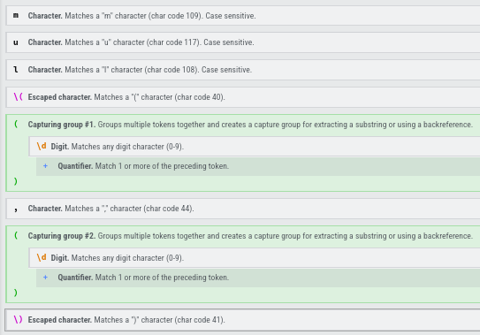

Here are some of the characteristics you will find in my solutions:
- All of my puzzles will be solved in C/C++
- I will not provide my personal input
- If you have any suggestions, comments or optimizations to my code please contact me
First of all get acquainted to the puzzle in this link
Part 1
If you read the puzzle you know it’s about findings patterns a perfect task for regex
Main
Our main consists of:
- Opening a file
- Reading the instructions
- Evaluating instructions with regex
int main() {
std::fstream inputFile = openFile("../input.txt");
memory m = readInstructions(inputFile);
std::cout << evaluateMultiplyInstructions(m);
return 0;
}
Opening a file
Just the standard file opening and checking for errors
std::fstream openFile(const std::string &fileName) {
std::fstream fp;
fp.open(fileName, std::ios::in);
if (!fp.is_open()) {
throw std::runtime_error("Could not open file");
}
return fp;
}
Reading the Instructions
We create a struct with a vector to hold our instructions, and then we loop through every line and push those instructions to the vector
typedef struct memory {
std::vector<std::string> instructions{};
} memory;
memory readInstructions(std::fstream &fp) {
memory m;
std::string line;
while (std::getline(fp, line)) {
m.instructions.push_back(line);
}
return m;
}
Building our regex
My favorite way to build a regex expression is going to regexr.com and playing a little bit, like a sandbox.
We can place the example string from the problem and try to come up with a regex expression, the website makes this a lot easier by including a cheat sheet and analyzing tools
My expression:
const auto regexExpression = std::regex (R"(mul\((\d+),(\d+)\))");
Here you can see a full on explanation of my expression generated by the website. Those 2 capturing groups are very important so we can get the operands easily.

Matching our expression
evaluateMultiplyInstructions() just loops through every line and sends it to matchRegexLine()
matchRegexLine() first creates and std::smatch where our matched string resides while std::regex_search matches something:
- transform both capture groups 1 and 2 to integer multiply then and add to the total
- go to the next match
Important to notice capture group 0(match.str(0)) is the entire match
int matchRegexLine(std::string line) {
int total = 0;
std::smatch match;
while (std::regex_search(line, match, regexExpression)) {
total += std::stoi(match.str(1)) * std::stoi(match.str(2));
line = match.suffix().str();
}
return total;
}
int evaluateMultiplyInstructions(memory &m) {
int total = 0;
for (const auto &line : m.instructions) {
total += matchRegexLine(line);
}
return total;
}
Part 2
*Everything else not mentioned here is the same as part 1
Memory Structure
We added a isEnabled variable that defaults to true
typedef struct memory {
std::vector<std::string> instructions{};
bool isEnabled{true};
} memory;
Regex Expression
Now we change our regex expression to match the do() and don’t()
The only difference here is that we added two or conditions
- do() = Matches do() string
- | = OR
- don’t() = Matches don’t() string
- | = OR
- previous match = Same as part 1
const auto regexExpression = std::regex (R"(do\(\)|don't\(\)|mul\((\d+),(\d+)\))");
Matching
First we check the full match to see if it’s a do() or a don’t() and if it is we enable or disable the memory
If the memory is enabled and is not a do() or don’t() we multiply and add it to the total using the capture groups
int matchRegexLine(memory &m, std::string line) {
int total = 0;
std::smatch match;
while (std::regex_search(line, match, regexExpression)) {
std::string fullMatch = match.str(0);
if (fullMatch == "do()") {
m.isEnabled = true;
}
else if (fullMatch == "don't()") {
m.isEnabled = false;
}
else if (m.isEnabled) {
total += std::stoi(match.str(1)) * std::stoi(match.str(2));
}
line = match.suffix().str();
}
return total;
}